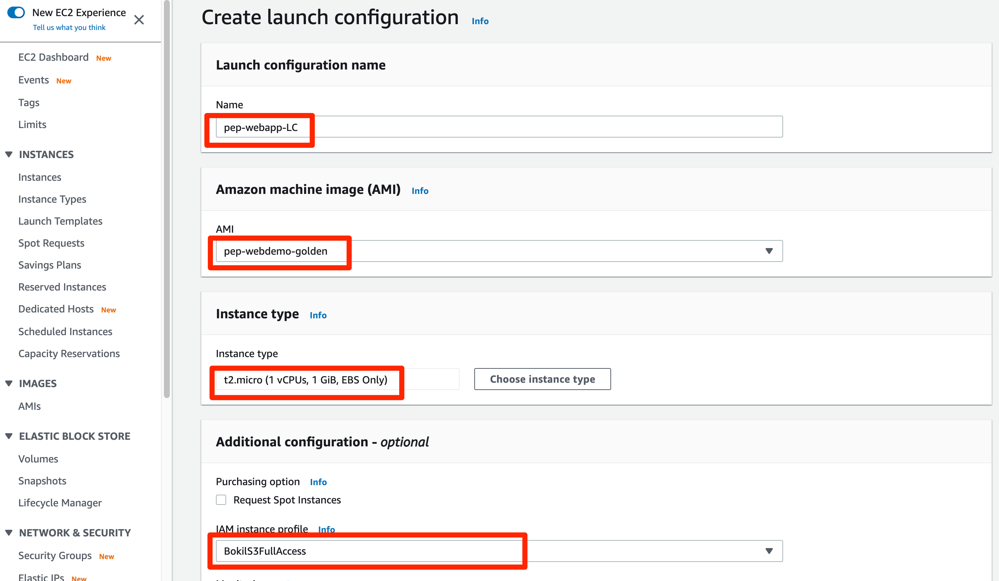
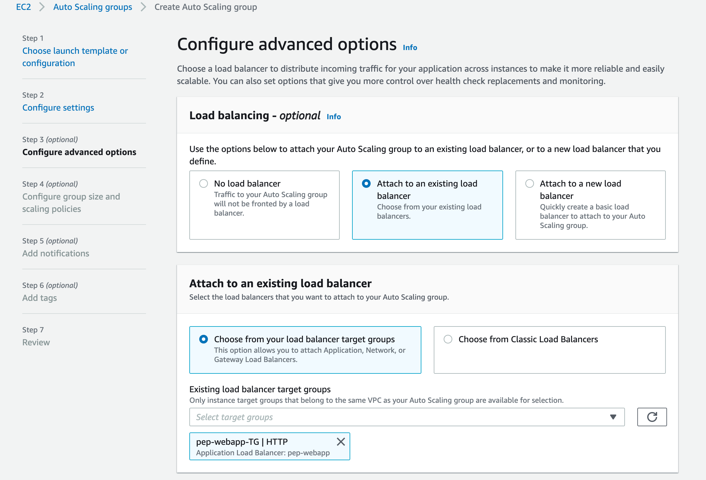
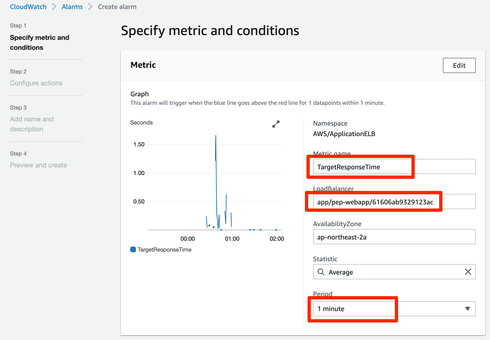
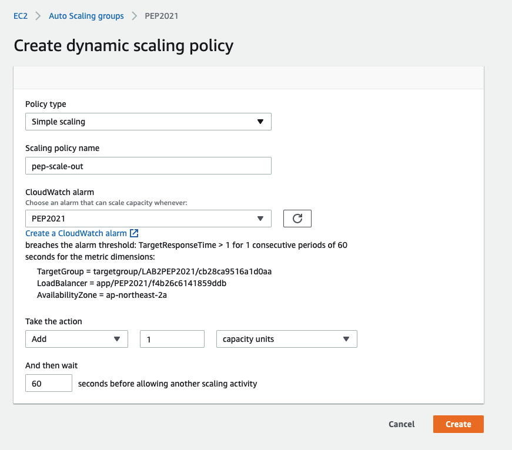
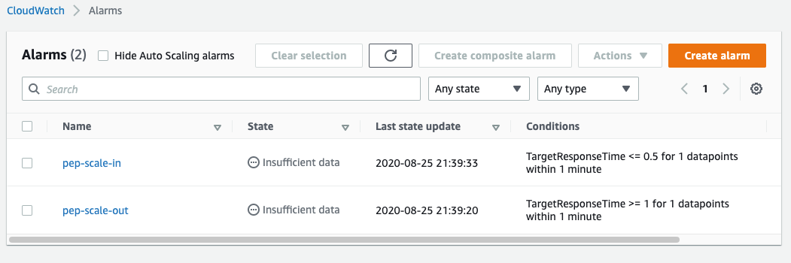

이번 레벨에서는 임의로 페이지 로딩 시간을 지연 시키는 모의 실험을 통해 scale in/out 동작을 확인합니다.
If you look at /efs/web-demo/config.php, you will find this piece of code:
$latency = 1; // Change it from 0 -> 1 (seconds)
And, in /efs/web-demo/index.php, there is a corresponding statement:
sleep($latency);
In your EC2 Console, create a launch configuration using the AMI and the IAM Role that we created in LEVEL-3. 
Create an AutoScaling group using the launch configuration we created in step ‘1’, make sure that the AutoScaling group receives traffic from your ALB target group. Also, change the health check type from EC2 to ELB. (This way, when the ELB determines that an instance is unhealthy, the AutoScaling group will terminate it.) You don’t need to specify any scaling policy at this point. 
Click on your ELB and create a new CloudWatch Alarm (ELB -> Monitoring -> Create Alarm) when the average latency (response time) is greater than 1 secs for at least 1 minutes. 
Click on your AutoScaling group, and create a new simple scaling policy (AutoScaling -> Scaling Policies -> Add policy ), using the CloudWatch Alarm you just created. The auto scaling action can be “add 1 instance and then wait 300 seconds”. This way, if the average latency of your web application exceeds 1 second, AutoScaling will add one more instance to your fleet. You can do the testing by adjusting the $latency value on your existing web servers. Please note the source code resides on your EFS file system, when you make the change from one of your EC2 instances, the change is reflected on all of your EC2 instances.

When you are done with this step, you can play with scaling down by creating another CloudWatch Alarm and a corresponding auto scaling policy. The CloudWatch alarm will be alarmed when the average latency is smaller than 500 ms for at least 1 minute, and the auto scaling action can be “remove 1 instance and then wait 300 seconds”. 